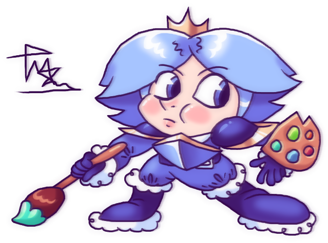

Принц Індиґо, насправді Блю Астер - вигаданий 12-річний обдарований хлопчик із вигаданої країни Сумі, що виховується у Дитячому Будинку №12 міста Поосе разом зі своєю найкращою подругою Зоряною Хитунець. Потрапивши до світу, що зветься Білий Край, нарік себе принцом зі солідним ім'ям Індиґо, а Зоряну назвав своєю особистою охороницею Маджентою.
Астер - товстенький русявий хлопчик із великими блакитними очима, тонкими довгими бровами, червоними щічками та маленьким гострим носиком. Також має маленький рот. Волосся густе, розходиться у два боки від верхівки голови, є звисаючі короткі пасма.
У Білому Краю кольори зовнішности Астера дещо міняються - волосся стає світло-синім та блискучим. У образі Принца Індиґо хлопчик одягнений у синю дублянку та сині штани з пухом, темно-сині рукавиці та чоботи, чоботи мають пух на підошві; на плечах круглі темно-сині наплічники із золотим краєм, нагрудник форми щита, має золотий гострий край угорі. Дублянка підперезана темно-синім ременем.
Астер сором'язливий і замкнений у собі. Він дуже творча людина, вигадує персонажів, любить малювати. Серед друзів має лише Зоряну, якій дуже довіряє. Попри свою сором'язливість, Астер дуже себелюбний і навіть часто егоїстичний.
Астер вірить у свою велику місію для світу. Він мріє стати відомим і дарувати людям радість своїми творіннями. Астер також має багатьох уявних друзів, багато з яких - його персонажі. Потрапивши до Білого Краю, Астер дізнався про Чорнило Життя - субстанцію, усе намальоване якою оживає. Володіння Чорнилом дозволило Астерові буквально намалювати своє власне королівство, принцом якого він себе проголосив. Астер дуже довіряє Веселці - божеству, що створило Білий Край. Веселка потурає Індиґо, заохочує його створювати і впливає на нього настільки, що хлопчик відмовляється повертатися до реального світу.
Астер має відмінні розумові здібності. Він чудово навчається та особливо добре справляється з гуманітарними предметами, будучи творчим і вигадливим.
Астер - сирота, чиї батьки померли, коли він був дуже малим. Його забрала вихователька дитбудинку та виховувала з особливою любов'ю, бачачи, що дитина має безліч талантів. Вона часто його називає своїм "скарбом", а Астер навіть зізнається, що вихователька нагадує йому маму.
Ім'я Астера походить від латинського слова "astrum" - "зірка". А прізвище - від французького "bleu" - "синій". Звідси виходить, що ім'я Астер Блю означає "синя зірка". А індиґо, до речи, один із відтінків синього.
До того ж, ім'я Зоряни теж пов'язане із зіркою, що робить її дружбу з Астером навіть дещо символічною.